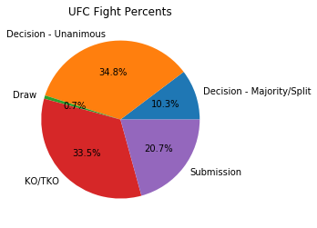
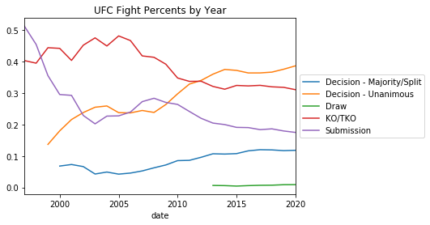

Background
Ultimate Fighting Championship or UFC is based off a 10-9 scoring system similar to boxing and the fight goes to the judges unless there is a KO,TKO, DQ, or submission. Typically fights last 3 rounds of 5 minutes, with championship belts and top contender fights lasting 5 rounds of 5 minutes.
For those interested, here is the current official MMA unified rules. Note that these have been changed and amended a few times since they were created in the early 2000s.
How to Win
As mentioned above there are a few different ways to end a UFC fight. Here we see both a pie chart and a time series graph of how fights end. I have removed all DQ and overturned results from the dataset and I have combined the split decision and majority decisions.
I aggregate the data into a pie graph and we can see that about a third of the fights are unanimous decisions and another third are KO/TKOs. The other third are a combination of submissions and split or majority decisions. There are rarely any draws.

However these percentages are not consistent. Like I mentioned previously there have been many iterations of rules and technique adaptations. The UFC looks vastly different now than in years past. To examine the changes, I create a rolling 5 year time series graph which again contains the various methods of how a fight can finish.
The five year rolling method smooths the data and we see that the proportion of submissions and KO/TKOs have both decreased over the years with an increase in both the decision methods. This could hint that fighters are getting better at defense, leading to longer fighting times ultimately more decisions.

Data
I have built a database of UFC stats (starting from UFC 1 in November 12, 1993 and also incorporating promotions UFC bought like StrikeForce and WEC); in total, this results to a database of over 5000 fights and 3000 fighters. I am able to get fighters physical attributes like age and reach as well as certain fighting stats like knock down percentage.
In addition, I have scraped a few betting websites for their lines, but unfortunately some of the earlier fights did not have betting lines. The betting data starts in 2012.
I am working to release the scraping code and data on my github so others can create reproducible results and test new theories. When looking through this data it is important to note that the UFC is rapidly evolving and conclusions found today may not hold in a few years.
There has been a lot of evolution within the UFC as in the beginning there was no time limits and only finishes, thus draws did not exist.
Below is an example of a the fighting stats that I shall collect. Here we see a recent fight between Molly McCann and Taila Santos. Similar to home and away in other sports, there is a red corner (Molly) and a blue corner (Talia) in which the red corner is usually the higher ranked fighter.
Taking a glance at the specific statistics, we can see that the UFC records a multitude of stats that are broken down into two categories: striking stats and totals. The totals focus on miscellaneous stats like KD (knock downs), TD (take downs) as well as total strikes.
The striking stats are broken down into the location on the body as well as the distance the strike was landed. In addition, strikes are classified as significant or not significant. We see Taila out-striking Molly and outclassing her in the take-down category, so it understanding that Taila won a unanimous decision,